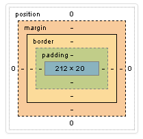

Блочная модель

Размеры элемента = размеры вложенного контента + padding + border
Также на расположение элемента в потоке влияют внешние отступы (margin) и позиционирование.
Ширина, высота
Если у элемента есть вложенный контент (например текста), то он будет отталивать дочерние элементы своими размерами.
Высота, минимальная и максимальная высота. По умолчанию auto.
min-height: 20px;
height: 100%;
max-width: 200px;
Ширина, минимальная и максимальная ширина. По умолчанию auto.
min-width: 30%;
width: 100px;
max-width: 40%;
Внутренние отступы (padding)
Горизонтальные и вертикальные - складываются. По умолчанию 0.
padding-left: 5px;
padding-top: 6px;
padding-right: 7px;
padding-bottom: 8px;
/* shortcut */
padding: 5px 6px 7px 8px;
padding-left: 5px;
padding-top: 5px;
padding-right: 10px;
padding-bottom: 10px;
/* shortcut */
padding: 5px 10px;
Внешние (margin)
Горизонтальные - складываются. Вертикальные - больший из двух. По умолчанию 0.
margin-left: 5px;
margin-top: 6px;
margin-right: 7px;
margin-bottom: 8px;
/* shortcut */
margin: 5px 6px 7px 8px;
margin-left: 5px;
margin-top: 5px;
margin-right: 10px;
margin-bottom: 10px;
/* shortcut */
margin: 5px 10px;
Выравн�ивает фикс. блочный элемент по горизонтали
margin-left: auto;
margin-right: auto;
/* shortcut */
margin: 0 auto;
margin: auto;
Схлопывание маргинов
Внутренний контейнер не оттолкнется от родителя, а это свойство передатся родителю, и уже родитель оттолкнется от верхнего содержимого, при этом внутренний контейнер прижмётся к верхней границе родителя.
Как это лечится?
padding-top: 1px;
border-top: 1px solid transparent;
Текст внутри родителя, также можно прозрачный
Управление блочной моделью
По ум. стоит content-box (width и height не включает padding и border). Но это можно изменить
*,
*::before,
*::after {
box-sizing: border-box;
}
Блочные элементы
<!-- Универсальный блочный контейнер -->
<div>BLOCK-1</div>
<div>BLOCK-2</div>
<div>BLOCK-3</div>
К блочным тэгам также относятся: <html>, <body>, <section>, <main>, <nav>, <article>, <header>, <footer>, <aside>, <p>, <h1> - <h6> и др.
.box {
display: block; /*по ум.*/
height: 50px;
padding: 5px;
margin: 5px;
}
- До и после блочного элемента существует перенос строки;
- Блочным элементам можно задавать ширину, высоту, внутренние и внешние отступы;
- Занимают всю доступную ширину по умолчанию.
Блочные элементы применяют
- Создание сеток страницы
- Контейнеры
Строчные
<!-- Универсальный строчный контейнер -->
<span>INLINE-1</span> <span>INLINE-2</span> <span>INLINE-3</span>
INLINE-1 INLINE-2 INLINE-3
.string {
display: inline; /* по ум. */
height: 50px; /* не реагируют */
width: 50px; /* не реагируют */
background-color: maroon; /* действует */
border: 1px solid orange; /* действует */
margin-top: 5px; /* не реагируют */
margin-bottom: 5px; /* не реагируют */
margin-left: 5px; /* действует + пробелы учитываются */
margin-right: 5px; /* действует + пробелы учитываются */
padding-left: 10px; /* действует */
padding-right: 10px; /* действует */
padding-top: 10px; /* фон увеличивается, но контент не отодвигает */
padding-bottom: 10px; /* фон увеличивается, но контент не отодвигает */
}
- До и после строчного элемента отсутствуют переносы строки;
- Ширина и высота строчного элемента з�ависит только от его содержания, задать размеры с помощью CSS нельзя (width и height не действуют);
- Можно задавать только горизонтальные отступы.
- Не действуют margin-top, margin-bottom.
- padding-top и padding-bottom влияют на фон, на поток не влияют.
- Как правило, к строчным элементам свойства блочной модели не применяют (width, height, margin, padding, border)
- Для строчных элементов лучше не задавать вертикальных отступов, т.к. они ведут себя непредсказуемо.
- Границы строчных элементов полностью реагируют на padding, но вертикальный padding не отталкивает другие элементы, выпадает из потока.
- Если заFLOATить строчный элемент, то он станет БЛОЧНЫМ
Строчные элементы применяют
- Оформление частей текста
- Контейнеры для небольших текстовых фраз
Инлайн-блоки
Комбинация block и inline. Уже практически не используются, их вытеснили флекс-элементы.
<div style="tex-alight: right">
<div style="display: inline-block; vertical-align: middle">
INLINE-BLOCK-1
</div>
<div style="display: inline-block; vertical-align: middle">
INLINE-BLOCK-2
</div>
<div style="display: inline-block; vertical-align: middle">
INLINE-BLOCK-3
</div>
</div>
ОТ СТРОЧНЫХ:
- выравниваются от свойства text-align родителя
- выравниваются от собственного свойства vertical-align
- располагаются в одну строку;
- реагируют на гор. и верт. выравнивание;
- ужимаются под содержимое;
ОТ БЛОЧНЫХ:
-
можно задавать размеры;
-
рамки и отступы;
-
можно флоатить;
-
Если инлайн-блок один, то он вертикально выравнивается по своей height относительно line-height родительского контейнера, причём line-height родителя должно быть больше чем height инлайн-блока.
-
Если их несколько, то они выравниваются относительно большей height отдельного инлайн-блока.
-
vertical-alignвыравнивает не только по высоте контейнера. Это свойство выравнивает инлайн-блоки между собой, относительно самого высокого элемента СТРОЧНО -
Выравнивание inline-блоков без margin-right(3n) (Обернуть в блок и задать ему маргин-слева -20px, а у каждого инлайн-блок поставить маргин-слева 20px)
Инлайн-блоки применяют
- Создание групп иконок
- Элементы меню
- Контейнеры карточек товаров и прочего
Display
По умолчанию у блочных элементов display: block, а у строчных display: inline.
div {
/* box-model */
display: block | inline | inline-block;
/* flex */
display: flex | inline-flex;
/* grid */
display: grid;
/* table */
display: table | table-row | table-cell | table-caption;
/* none - убирает элемент из DOM-дерева, как будто его никогда не было */
display: none;
/* убрать визуально (в потоке остается) */
visibility: hidden;
}
div {
display: contents;
}
Скролл / Overflow
Если контент не вместился в фиксированные размеры бокса, то он будет выпадать из него и выходить из потока. Чтобы контент пролистывался можно добавить гор. или вертикальный скролл
/* По ум. видимый */
overflow: visible;
/* Спрятать */
overflow: hidden | clip;
/* Автоматическое появление */
overflow: auto;
/* Появление скролла, даже когда нет overflow */
overflow: scroll;
/* Управление отдельными осями */
overflow-x: ...
overflow-y: ...
/* Предотвращение цепной прокрутки */
/* Чтобы не прокручивался еще скролл, который не в фокусе */
overscroll-behavior: auto* | contain | none | auto contain;
Визуально спрятать скроллбар
Скроллбара визуально не будет, но контент будет скроллиться.
/* Hide scrollbar for Chrome, Safari and Opera */
.example::-webkit-scrollbar {
width: 0;
display: none;
background: 'transparent';
}
/* Hide scrollbar for IE, Edge and Firefox */
.example {
-ms-overflow-style: none; /* IE and Edge */
scrollbar-width: none; /* Firefox */
}
// Кастомизация скролбара
.content {
max-height: 370px;
overflow-y: auto;
padding-right: 35px;
// scrollbar track width
&::-webkit-scrollbar {
width: 4px;
}
// scrollbar track background (полоска)
&::-webkit-scrollbar-track {
background-color: transparent;
}
// scrollbar thumb (бегунок)
&::-webkit-scrollbar-thumb {
background-color: $blue;
border-radius: 8px;
}
}